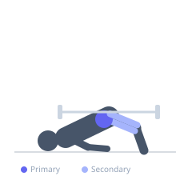
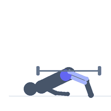

Exercise guide / Barbell Hip Thrust
Barbell Hip Thrust
The barbell hip thrust is a loaded hip extension exercise in which the upper back is braced against a bench and a barbell rests across the hips. It places the gluteus maximus under maximal tension at full hip extension and is widely considered the most effective exercise for direct glute development and hip extension strength.
Primary muscles
gluteus maximus
Secondary muscles
biceps femoris long head
semitendinosus
vastus lateralis
Stabilizers
transverse abdominis
gluteus medius
Equipment
Standard Barbell
Flat Bench


Starting position
- Sit on the floor with your upper back against the long side of a flat bench. Roll a barbell over your thighs to rest across the crease of your hips. Place a barbell pad if needed for comfort. Feet flat on the floor at shoulder width.
Setup
- Position the bench perpendicular to a wall or stabilize it. Ensure the barbell is centered and resting across the hip crease, not the lower abdomen.
Steps
- Drive through both heels and squeeze the glutes to thrust the hips upward.
- At the top, the torso from knees to shoulders should be parallel to the floor.
- Squeeze the glutes hard at the top for one second.
- Lower the hips under control back toward the floor.
Coaching cues
- Drive your hips toward the ceiling, not toward the wall
- Squeeze your glutes like you are holding a coin between them at the top
Breathing
- Exhale on the hip thrust. Inhale on the descent.
Range of motion
- Hips descend to just above the floor at the bottom, full horizontal lockout at the top.
Tempo
- 2-1-1-0
Common mistakes
- Arching the lower back at the top — tuck the chin and think about driving the ribs down
- Pushing through the toes instead of the heels
- Inadequate hip extension at the top — do not stop short
Safety
- Use a barbell pad to protect the hip bones and reduce discomfort
- Ensure the bench is stable and cannot slip
Training
- strength: 4–8 reps
- hypertrophy: 8–15 reps
- strength: 3–5 sets
- hypertrophy: 3–4 sets
- Rest: {'strength': 150, 'hypertrophy': 90}